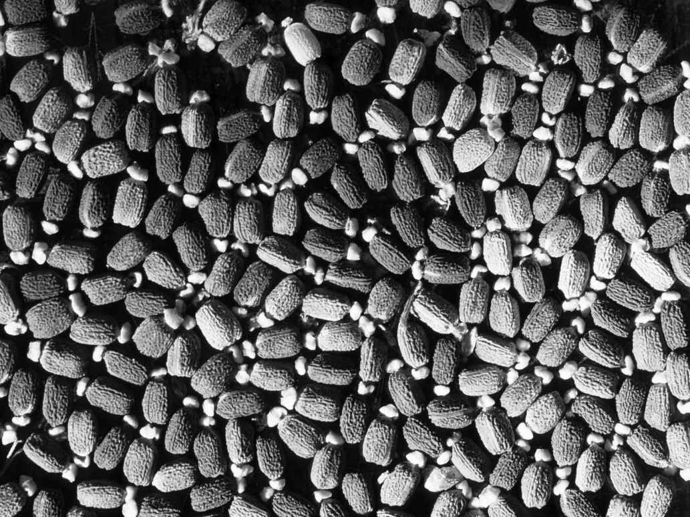
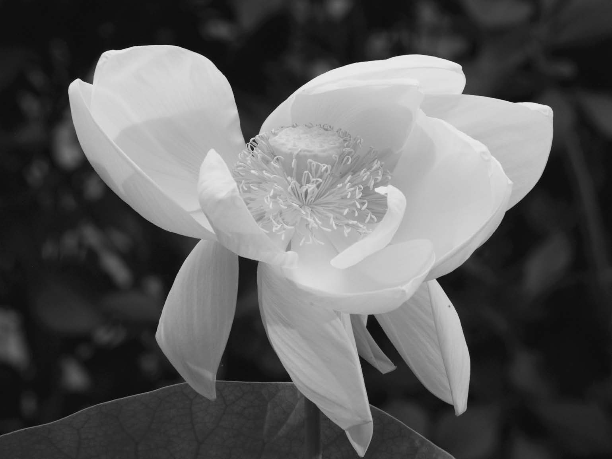

如果你生活在水中，那么有两种方法活动：漂流或是游动。有些灰胞藻是游动者，有些红藻是漂流者（如多管藻），有些绿藻是游动者（如衣藻、团藻和石莼），而有些绿藻是漂流者（如水绵和轮藻）。这里所说的游动是指孢子（例如石莼）或整个生物体（例如衣藻和团藻）的游动。精子的游动不算数，因为这不是营养扩散，而仅仅是雄性生殖系的遗传扩散。精子不能发育成独立生存的生命体。另一方面，石莼的游动孢子则能够长成一株独立生存的植物。与陆生植物相比，生活在水中的植物的传播是否重要呢？传播对陆生植物而言是否重要呢？这些问题的答案在某些社会中似乎根据人类的状况而充满了主观色彩。据推测，在某些地区，人们认为儿童会离开家乡，而在其他地区，大家期望他们加入家庭团队并支持整个族群。植物没有情感，传播机制只有在能够增加植物基因进入下一代的机会时，才会被植物选中。
让我们回到以上问题上来。植物的传播是否重要呢？水环境要比陆地更加均一。陆地环境中存在的意外障碍极少出现在水中；水中存在梯度变化，但这些变化往往是渐进的。在这种环境中，游动是很有用的，因为这能使年幼的植物远离同物种的其他成员，因为这些成员对其造成的竞争要比任何其他的有机体更为激烈。然而，同样适用于陆生植物的是，如果亲本植物在某个地区生长良好，那么子代为什么要冒险离开这里呢？或许，这就是多达80%的陆生植物物种选择仅仅把种子撒在根部，而并不试图促进传播的原因吧。与水生环境相比，陆地在空间上具有异质性，因此我们或许以为有更多的陆生植物会在传播机制上下功夫。然而，除了空间异质性外，陆地在时间上也可能非常异质，因此我们需要同时考虑植物在时间和空间上的传播，因为植物可以以动物只能梦寐以求的方式进入假死状态。
让我们先来看看苔类植物和藓类植物。这些植物产生单倍体孢子，孢子再生长为独立生存的配子体。我们不仅会在地面上看到这些植物，也能在树上、高高的屋顶和墙上，偶尔也能在旧路虎的车窗管道里看到它们。孢子足够轻，可以被吹到任何高度，而且多亏了它们的孢粉素外壳，孢子也能在旅途中存活下来。蕨类植物在一定程度上也是如此。有许多蕨类植物并不生活在土壤中。有些附生蕨类植物生长在树枝外，有些蕨类植物是自由飘浮的，有些则生长在墙壁上的石头缝里。对于附生的蕨类植物物种而言，孢子必须能够到达它们赖以生长的树枝上。这同样适用于附生开花植物，比如兰花、多种凤梨科植物以及天南星科的部分成员，但我们稍后再介绍这些开花植物。所以从最随意的观察来看，苔类植物、藓类植物和蕨类植物在生存和传播上似乎没有困难。此外，孢子非常小，因此不会成为颇具吸引力的食物来源。种子却并非如此，那么种子有什么特别之处呢？为什么进化会偏爱于生产种子这种消耗能量的结构，而种子又成为许多生物最喜欢的食物呢？
种子生物学的规则即便存在也非常少。在理解种子生态学之前，我们仍要进行大量的研究。有一个问题是，种子植物至少有35万个完全不同的物种。同一个属内的物种在种子生物学上可能有所不同，甚至同一物种的植物在不同的地区可能也有所不同。例如，土耳其松（Pinus brutia ）的生长范围从希腊克里特岛直到希腊北部。在其生长范围的南部，它从未经历过霜冻，而在北部冬季的夜晚，气温常常降到零度以下。生长在南方的土耳其松的种子不会休眠，它们在秋雨来临时就会萌发，就像世界上地中海气候地区的许多植物一样。另一方面，北方的土耳其松种子不想在严冬来临之前发芽，因此它们的种子需要在来年春天生长之前进行冷藏。它们仍然是相同的物种，因为气候驯化与物种形成并不相同。
有一件事我们可以不用担心矛盾地说明一下，那就是种子要比亲本植物小得多，而且它们能够耐受足以杀死亲本植物的严酷条件。正是这种能力，也许要比其他任何能力更能影响植物产生种子的各种策略。对于那些一生中只开花一次、因而也只产生一批种子的植物物种（一次结实植物）而言，至关重要的就是至少要有一颗种子存活到开花的时候，并将基因传递给下一代。本章可能会多次提到这句话，但它经得起重复：绝大多数种子都无法成长为能够产生更多种子的植物。如果是一棵橡树，能够在多个季节产生种子，那么这不是个问题，但一年生植物仍然只有一次机会。
35万个种子植物物种中的每一个都与其他物种有所不同。同一物种中的每个个体在其一生中都要做出选择，从而导致了更多的多样性。生物学家们有时试图把生物学简化为资源配置问题，以便对生物体的习性和行为做出合理的解释。因此，当植物产生种子时，它们必须平衡植物体的生长需求与种子生产的能量需求。我们可以很清楚地发现，产生种子需要植物付出很大的代价，因为在那些雌雄异株的物种中，与雄性植株相比，雌性植株往往体型更小、寿命更短。
你会选择产生许多小种子，还是产生较少的大种子？如果产生大量的种子，这会增加你的生存概率吗？事实上，一次结实植物往往会产生非常多的种子，这意味着植物生产的种子越多，其生存概率越大。你会选择用脂肪还是碳水化合物作为种子的能量供应呢？脂肪的制造成本更高，但每克脂肪所含有的能量更加丰富。植物将2.3% ～ 64.5%的资源投入到种子生产中。种子生物学很少有规则可言。
另一个问题就是，植物需要多长时间才能成熟。与动物不同的是，同一物种中的性活跃植物在体型大小上可以也确实有很大不同。如果遭到强烈的破坏，植物往往会在下一次灾难性变化来临之前迅速地完成生命史。在环境比较稳定的地方，种子生产可能是稳定不变的。例如，与无花果小蜂有着独特关系的无花果树全年都会产生花朵来满足小蜂的需求。另一方面，山毛榉树则表现出一种不同的大量结实策略，也就是大约每7 ～ 10年才产生一大批种子。人们认为这种策略的优势在于植物产生的种子数量要远大于自然捕食者能够消耗的种子数量。另一方面，橡树每年都产生许多橡子，其中许多橡子被松鼠藏起来后又被它们遗忘。这对橡树来说似乎是个好消息。
图9 巨子棕（Lodoicea maldivica ）具有世界上最大的种子。它只生长在塞舌尔的普拉兰岛上
种子的大小差别很大。兰花的种子极小，几乎像是灰尘；而巨子棕（又称海椰子）的种子足有两个澳式足球那么大；也就是说，种子的重量有七个数量级的差异，但兰花种子和巨子棕种子行使着同样的功能，二者都有潜力长成成熟的开花植物。即使在同一株植物中，种子的大小也能达到三个数量级的差异，而同一个果实内的种子也能有所不同。有一条经验法则似乎是，生活在阴凉处的植物的种子往往具有更大的尺寸上限，这可能是因为更大的种子能令它们在能量水平较低的环境中生长。种子的大小似乎与土壤的含水量和养分状况均无关系。这可能只是因为，植物通过生产大小不同的种子来规避风险、增加生存机会。同一尺寸的种子并不适用于所有情况。
在前一章中，我们看到有许多植物依赖陌生物种来传播它们的精子，而那些不信任动物的植物真的就是抛掉谨慎随风飘荡。我们知道，生物或非生物授粉方式都无法完全令人满意，因为植物的人工授粉几乎总是要比大自然的方法更加成功。在这方面，开花植物的一些科尤其不可救药。在山龙眼科中，尽管受到传粉者访问的花有很多，但最多仅有7.2%的花能成功授粉。这可能是因为它们选择的传粉者如今已经灭绝了。（植物物种在与动物物种进行联合经营时普遍存在一个问题，那就是植物物种的进化周期大约是动物物种的30倍。因此，如果你打算用动物来传播花粉或种子，你就必须做好反复更换供应方的准备。）
我们在植物繁殖中见到了阿利效应 [1] 的一个很好的例子，也就是说一个物种的成员最好是待在一起——这是科学的安全数量原则——因为植物和花的数量越少，成功的授粉就越少，因此产生的种子就越少。在你开始认为其中即将有规则诞生之前，必须记住，虽然更大的花序群会吸引更多的传粉者，从而产生更多的种子，但它们也会吸引更多的食花动物、更多的种子采食者和更多的果实采食者。因此种子没有最佳尺寸；最佳尺寸是依据时间和空间而特定存在的，所以最佳策略就是变异。
查尔斯·达尔文不仅对授粉感兴趣，而且对物种的地理分布也十分着迷。他曾在其故居里进行了一些精妙的实验，以探索陆生植物的种子能否在海水的盐度下存活足够长的时间，使其能够从一块大陆漂移到另一块大陆。他认为鸟类的足是另一种远距离传播的方式，特别是传播到海洋岛屿，这是孩子们在学校自然课上最早学到的内容之一。老师会向孩子们展示拉拉藤属（Gallium ）和起绒草（Dipsacus fullonum ）的果实是如何附着在动物的皮毛上的，而且由于这是我们最早了解到的内容，所以我们往往认为大多数植物都是这样传播种子的。事实上，只有不到5%的物种会依附在动物体表旅行。这些物种生长低矮（即动物的高度），并且来自多种不同的栖息地。在我们介绍过美国悬铃木的“直升飞机”种子后，风的传播也被认为是很常见的，但是很少有结构能改善种子的横向运动，它们只是能令种子下落得更慢，从而使水平向的风产生更大的影响。如果风力很强，便能造就非凡的传播，但是人们已经证明，被动物藏起后却遗忘的一批种子要比被风吹散的一粒种子距离母体植物更远。因此，动物皮毛和风的确有助于种子的传播，但只有少数物种会利用这些传播方式。一些亲本植物通过弹道机制将种子物理喷射出去。其中最壮观的可能要数喷瓜（Ecballium elaterium ）了，当果实从茎上脱落时，它会将种子以废气流的形式释放出来。这种传播方式极其有效，每粒种子都能在迷你果实的短暂飞行中被排出。
除这两种方式之外的主要传播方式就是种子被动物吃掉，然后被动物排泄到距离母株有一定距离的地方。这是一种冒险的策略，因为动物（通常是哺乳动物或鸟类）出于营养价值而吃掉种子，所以它们会碾碎并杀死种子以便提取食物。有趣的是，那些善于在山羊肠道中存活下来的种子同时也能在土壤种子库中保存多年。有一种可以降低被动物消化的风险的方法就是在种子上覆盖一层泻药；这在由鸟类传播的物种中更为常见。对植物而言，这可能是一种很好的策略，但这确实给鸟类传播的研究造成了困难，因为很难为这种随机的传播绘制地图！就像传粉者和花可以配对一样，种子和动物也可以配对。鸟类容易被无香味、色彩鲜艳（通常会结合红色、蓝色和黑色）的种子所吸引，而哺乳动物则喜欢有臭味、味道鲜美但颜色暗淡的种子。动物可传播有活力的种子的实际证据十分薄弱。在两项研究中，研究人员分别对40 000份鹿的粪便和1 000公斤犀牛粪便进行了检查，并没有发现有活力的种子。另一项研究中，在40 025粒被朱雀食用的种子中，只有7粒幸存下来。
把动物肠道作为传播媒介不切实际而且愚蠢，很多种子和果实有毒可证明这一点。正如植物生物学的许多方面一样，种子或果实因具有毒性而受益有许多原因，而这些原因绝不是互相排斥的。一个美味但含有泻药的果实将确保种子能够迅速且安全地通过消化道。催吐剂可以确保种子在进入消化道之前被再次迅速且安全地排出。如果种子或果实有毒，那么它可能会杀死动物，借助腐烂的宿主给幼苗提供营养。毒素可能会保留其中，抑制种子的萌发，也就是生理休眠，我们在后文中会更详细地介绍。毒素可能对种子采食者有毒，但是对果实传播者无效。其中一个很好的例子就是英国紫杉，这种植物红色的假种皮可以安全食用，但种子是有毒的。最后，毒素也可能起到对病原体的防御作用。

图10 黑叶大戟（Euphorbia stygiana ）的种子，显露出油质体
蚂蚁是在种子传播中至关重要的一类动物，特别是在地中海型地区。经由蚂蚁传播的种子含有油质体。这种脂肪组织通常比种子小得多，是蚂蚁的一种致醉物质，只要它刺激蚂蚁拾起种子并把种子带回巢穴，在进入蚁巢之前，蚂蚁会咬下油质体，把完整的种子留在外面。蚁巢周围的土壤往往比附近的土壤养分含量更高，而且种子通常被带到地下几英寸的地方，在那里种子不仅能免遭其他动物的侵害，而且还不会受到这些地区常见火灾的有害影响。许多植物物种都依赖于蚂蚁的这种保护，因此当非本地的蚂蚁物种驱逐出本地物种时，这些植物就会很容易遭受地方性灭绝。
关于非本地物种的问题，我们将在第七章中更详细地讨论，但现在我们所讨论的问题与之相关，因为植物生长在这里而不生长在那里的主要原因是它们无法到达那里。然而，人类已经无意或有意地打破了每一道传播屏障。农民通过受污染的种子袋、肥料和牲畜来传播种子——已有证据表明400只绵羊每年能移动800万粒种子。园丁已经把成千上万的物种远远移到了它们的自然生长范围之外。最后，林业工作者把更具生产力的树木引入许多国家。我们不能低估这些非本地物种可能造成的损害。
种子传播的“益处”有多种原因。第一，亲本植物将成为害虫和疾病的向往胜地，极少有植物疾病能在种子内部或表面存活。这种掠食者和疾病的解除是植物在新引入的国家大肆扩增的原因之一。第二，传播种子可以减少随机发生的或者突发且不可预测的灾难所造成的风险。第三，它减少了植物的亲子竞争（此处将植物学更加拟人化）。第四，它增加了植物找到“安全地点”的机会。然而在现实情况中，超过80%的植物不会做出任何努力去散布它们的种子，所以除非植物需要进行快速迁移，否则没有对种子传播的适应性并无不利之处。如果气候变化得很快，那么在接下来的几十年和几个世纪里，植物可能会非常积极地选择快速迁移。
种子是植物的传播单位，而由于种子在土壤种子库中的生存能力，我们可以说种子在时间上被传播了。我们很难对在土壤种子库中会找到哪种植物和哪类种子做出概括，其中有部分原因是很难找到种子。不过，一般来说，小种子在土壤中存留的时间更长，因为它们对掠食者的吸引力较小，而且比大种子更容易落入土壤的缝隙中。如果种子足够小，土壤可以容纳许多种子，目前已有的最高纪录是每平方米土壤中含有488 708粒种子。种子在土壤中的最长存活时间纪录是由神圣的莲花（Nelumbo nucifera ）种子所创造的，这颗种子在埋藏了1 288年（前后可能相差250年）后仍能萌发。在英国，W.J.比尔曾于1879年发起了一项实验。在土壤中埋藏了120多年后，人们仍然可以从中挖出有活力的种子。

图11 莲的种子可存活超过1 000年
土壤种子库中的种子可能没有休眠，它们可能只是身处的萌发条件不对。在这种状态下，我们认为种子处于长期的静止状态，而对于埋在地下的种子来说，光是它们所缺失的条件。为了存活下去，种子可能是干燥的，但有些种子在吸水的情况下能存活得更好，因为在这种条件下它们能够更好地修复膜和DNA上的日常损伤。然而，种子埋得越久，就越有可能死于病原体、掠食者或者放牧后的过早萌发。持久生存的能力似乎属于某个物种的特性，而非属于某个物种中的个体。持久性还与完全无法将植物培育出下一代的潜在风险有关。这意味着，像林地这样的稳定群落中的植物在土壤种子库上的持久性不如地中海型生境中的种子。
我们已经提到过休眠的复杂概念，还需要正确地理解它。种子不会在一大包种子中发芽，这是因为环境不满足萌发的基本要求。这些种子处于静止状态。如果某时某刻的环境是错误的，那么它可以阻止种子发芽。休眠是种子的一种状态，而非种子所处的环境。如果种子在播种后的一个月内没有发芽，那种子要么是死的，要么处于休眠状态。如果种子处于休眠状态，那么休眠必须被打破，种子才能发芽。休眠的作用是控制发芽的时机，使得幼苗获得最大的生存机会。在环境条件一致且可预测的生境中，休眠就不那么重要，因为这些条件本身就会阻止种子萌发。热带潮湿林地的大多数物种不会产生休眠种子。
休眠有三种基本类型。形态休眠是指种子中的胚胎在脱落时尚未成熟，例如兰花的种子。物理休眠是指坚硬的种皮可以阻止水分的吸收并保持胚胎的干燥，例如豆科植物的种子。生理休眠是指种子需要一些化学变化，例如蔷薇科植物的种子需要冷藏一段时间。前两种休眠类型是不可逆的，而生理休眠则是可逆的，因而也具有一定的灵活性。形态休眠和物理休眠从不同时发生；形态休眠和生理休眠通常一起形成形态生理休眠（MPD）；而物理休眠和生理休眠极少同时发生。
休眠会把植物困在特定的生境里，一旦气候变化，植物就极其容易受到影响。然而，亲本植物所经历的条件会影响休眠，因此同一个物种的植物可以表现出不同的休眠状态，这取决于它们的生长环境。例如，生长在克里特岛的土耳其松无须休眠，并在雨水来临的秋天发芽，而生长在希腊北部的土耳其松的种子则需要一段时间的冷藏来阻止萌发，直到冬天结束、春天到来。
一种普遍的观点认为，坚硬种子所引发的物理休眠是由一段时间的磨损或者微生物的攻击所打破的。目前没有证据可以支持这种观点。这种休眠的打破要受到更多的调控，由各种不同的结构提供温度控制的单向阀，以允许水分的进入。这种策略已经在几个不同的植物类群中发生独立的进化。另一种已经发生多次进化的策略是寄生，寄生物种的种子有一种非常巧妙的感知功能，当寄主植物就在附近时便可以察觉到它们的存在。
吸水是种子萌发的第一阶段。随后便是呼吸作用的迅速增加和食物储备的调动。胚胎开始生长，当幼根长出来时，种子已经发芽，一切已不能回头。许多因素都能刺激萌发。昼夜间的温度波动是种子感知上方树冠空隙的一种方法。同样，感知落在种子上光的质量和数量的能力将使种子萌发的时间与一年中特定的时间、特定的埋深或阴影程度相协调。光敏感是由种皮引起的，值得记住的是种皮是由母体植物所提供的。这是亲本所经历的环境条件能够同时影响种子的休眠和萌发需求的一种方式。
可利用水分是种子萌发的关键条件。并非所有的种子都是干燥并且能耐干燥的。至少有7.4%的物种所产生的种子并不遵从这一规则，这意味着它们无法忍受土壤的干硬。土壤营养水平对某些种子的萌发有着重要的影响。杂草需要高水平的氮。树冠间隙的形成通常伴随着氮的增多，因此光照、温度和土壤养分状态可以相互联系起来。打破休眠并促进发芽的一种普遍机制是烟熏，人们甚至在目前并不生活在火灾常发生境的物种中也发现了这种现象。
通常认为，优势植物的落叶层能抑制种子的萌发。尽管这种抑制后代的想法很有吸引力，但这种化感作用从未在自然系统中得到证实。落叶层可以为种子萌发提供一种机械障碍，或许可以将需要光的种子维持在黑暗状态中。落叶层对种子萌发和幼苗形成的影响是一个经典的生物学难题，因为落叶层在为种子萌发提供良好苗床的同时，也可以成为蛞蝓和蜗牛等小型食草动物的栖息地。
因此，种子萌发受到温度（实际温度和相对温度）、水分有效性、营养水平（尤其是氮含量）、火灾以及土壤种子库的存在等因素的影响。人们猜测，所有因素都会随着气候的变化而变化。气候变化对种子行为的影响可能意义深远。
种子即便已经萌发，也仍然处于危险之中。研究表明，超过95%的幼苗可能被吃掉或以其他方式被杀死。这个数据还排除了所有被吃掉或是落在不适当位置的种子。这些损失可能都不是特别引人注目。种子无法成长为成熟植株的最大单一原因是缺少合适的生长间隙。约翰·哈珀引入了“安全地点”的概念，即满足种子萌发和幼苗成功形成的所有条件的地方。这些地点可能非常小，或许只有1%的种子能够找到一处安全地点。土壤必须处于合适状态，菌根真菌必须存在并将在7 ～ 10年内与之形成关联，并且光照水平必须适宜。
种子生物学可能看起来并不精确。我们如今对种子的了解要比20年前多得多，但仍然没有总结出任何规则。这是不是因为种子生产是一种进化上有风险的策略？胚胎在任何生命周期中都属于一个脆弱的阶段，但是对所有的亲本来说，在释放胚胎的同时吸引捕食者为其提供食物似乎都是一种奇怪的行为，但它却排除万难做到了这一点。芬纳和汤普森曾经明智地提出，世界上存在“因未加选择而导致物种多样性的再生抽彩”。这种抽彩造就了40多万种植物。我们该如何梳理这种多样性来帮助我们理解生物学呢？第五章告诉你答案。